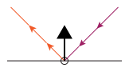
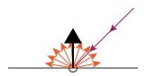
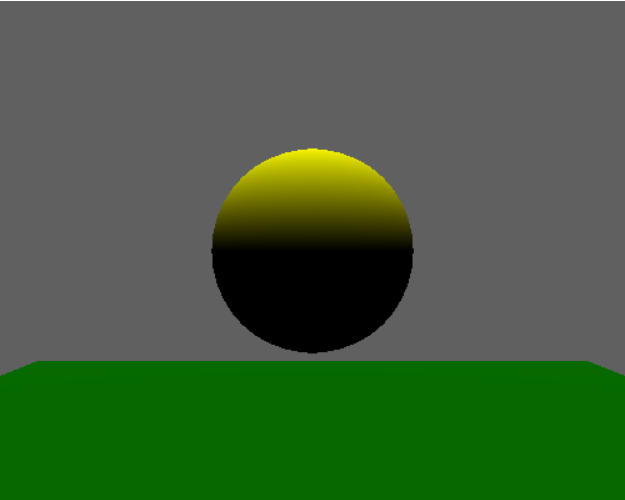
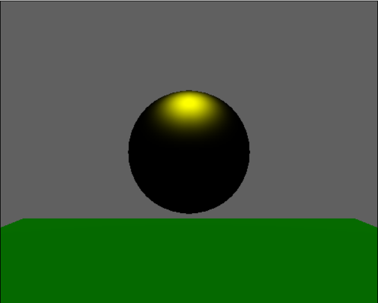

Page 8: Shading Overview
In 2D, we generally specified the color we wanted objects to appear.
In 3D, the color that something appears on screen depends on how the object responds to the lights in the scene, which involves the color of the object, the lights, and the geometry between them.
The process of figuring out what color something actually appears is called shading. The shading computations involve figuring out what color an object is and how it responds to light. In this workbook, we’ll learn some of the basics.
We will learn a “historic” approach to the lighting computations. These simplified models of lighting were used in early computer graphics because they were the first things researchers figured out how to do. Even as more sophisticated models were developed, these classic models continued to be used because they were efficient to implement (especially in hardware). The classic models are still implemented in three.js, although fancier lighting models are also provided.
In this workbook, we will be considering local shading (and therefore local lighting). This means that we consider each location separately; objects do not affect other objects. We assume that all light that comes to a point comes from a light source. This means that we will not have inter-object effects such as mirror reflections (of other objects), shadows, or spill. The local shading model is important for efficiency: each object can be processed independently of the others. We will learn various tricks to fake the kinds of effects that we lose because of the local lighting assumption. The local lighting model is still the standard for interactive computer graphics (and the tricks for getting the effects are very well-developed).
The discussion of these models in the videos is:
Part of 2023 Lecture 17 | Slides
I strongly recommend (I may say “require”) watching the two “Graphics in 5 Minutes” videos. Note that he describes this in reverse order than I do in the workbook. But he also connects the concepts to the underlying physics.
Lighting Models
Here is a demo of the three main lighting models in three.js.
The Phong model is the classic computer graphics lighting model that we will discuss over the next few pages. It is flexible enough to capture a wide range of surfaces and is efficient. The standard model is derived from physical principles, while the physical model adds even more special effects.
A Basic Lighting Model
We will consider what color a specific point on an object appears. The point has a surface normal that describes how the surface of the object is oriented.
To make the pictures easier, we will draw the point as being on a flat surface, but the same things apply to an infinitesimally small piece of surface at the point - we can think of the flat surface tangent at that point.
We consider one light source at a time. The contributions of different light sources can be added together.
For basic lights, there is a single direction that the light comes from when it hits a point. For a point light, it is the vector from the light source to the target point; for a directional light source, all points get light from the same direction.
Simple shading models are based on considering two different types of surfaces. At one extreme are shiny surfaces, such as mirrors. These objects bounce light back according to the direction it came from. High school physics says “angle of incidence equals angle of reflection”. In a perfect mirror, light comes in from one direction and goes out in one direction.
{kind=link}

In this perfect world, the light comes in from one direction, it goes out in one direction - so that unless the viewpoint happens to be exactly along that direction, you won’t receive the light (from this source reflected at this point). In practice, shiny objects are not perfectly smooth, so that they send light in a range of directions, but the closer you are to the line of reflection, the more light goes in that direction.
In contrast, there are very rough surfaces. These surfaces have their microscopic geometry that is not flat at all. If we look closely enough, the surface normals are going in all directions. If light comes in from one direction, it is equally likely to go out in any direction. Matte surfaces like chalk or unpolished wood have this property.
{kind=link}

Each of these surface types, shiny (or specular) and matte (or diffuse), can be modeled with a simple model. The standard computer graphics model creates lighting by saying that real objects are a blend of these two different extreme cases.
{kind=link}

Diffuse (matte)
{kind=link}

Specular (shiny)
These pictures are a sphere lit from above. With a diffuse surface, the parts of the object that face the light appear brighter, so the top of the sphere is bright and evenly lit. With a specular surface, the direct bounce point is brightest. There is a bright spot where the bounce path is direct. As we get farther from the spot, the brightness falls off. If the object were very shiny (closer to a perfect mirror) the spot would be smaller and sharper.
There is a third piece to the classic computer graphics lighting model: the ambient component. In both specular and diffuse models, parts of the object that do not receive light directly (they face away from the light source) are completely dark. In the real world, enough light bounces around (off of other objects), that even the dark sides of objects get some light. We model this using a hack: ambient light. We add in a little bit of light that is everywhere from all directions; it effectively makes the objects glow.
This “classic” computer graphics lighting model is sometimes referred to as the Phong lighting model. Its inventor, Bui Tuong Phong, was the first person to put the three components together. He also is credited with the specific model of specular highlights we will show on the next page. This model is the Phong Reflectance Model. In a moment, we’ll learn about something else that is named for Phong.
Beyond the classic model
The Phong model can produce a range of appearances and is simple enough to be efficient. However, it is very empirical. Someone made it up, and decided it looks good. It doesn’t actually work like the physics of real materials.
More modern lighting models are derived from the physical equations of how light acts with materials. They are generally more complicated and computationally expensive. However, they also look more realistic. And, because they are based on real-world effects, their parameters tend to be sensible physical properties, not random constants.
Three.js provides the Phong lighting model, but it also provides two “better” models: MeshStandardMaterial and MeshPhysicalMaterial. The standard material is a physically-based model, however the “physical” material adds even more real-world effects.
It is important to understand the classic Phong model because it provides the intuition for how surface lighting works. It is still important in practice because it is easy to implement, and very efficient.
When do lighting computations happen?
Local lighting computations, no matter which model we use, happen at specific points. When we have a triangle, there are a few choices for which points we do the computations at:
- Once per triangle: we compute a single lighting calculation for the whole triangle, so the whole triangle is a solid color. This is sometimes known as flat shading, since it emphasizes that each triangle is flat (even if it is trying to approximate a smooth surface).
- Once per vertex: we compute the lighting calculation for each vertex. This means that the colors are interpolated across the triangle (usually using barycentric interpolation). This is commonly called Gouraud shading, or sometimes smooth shading (although, other shading might appear smooth as well).
- Once per “pixel”: we compute the lighting for each pixel independently. When we learn about the hardware, we’ll see that it may not be exactly the pixels, but the idea is that each point on the triangle has its lighting and color computed separately. If the normals are specified per-vertex, then the normals must be interpolated. This is commonly called Phong shading. Phong shading implies that we interpolate the normals across a triangle, and compute the shading calculations many times over the triangle.
Historically, performing per-pixel lighting calculations was too slow. Gouraud shading was a trick to make things look smooth, but only do the complex lighting calculations at the vertices. With modern graphics hardware, computing the lighting per pixel is feasible.
With modern graphics hardware, we tend to do lighting computations per-pixel.
Next: Page 9 - Diffuse Shading